SeqPlotR Links: Arches, SV Reconstruction, and Cross-Track Connectors
Source:vignettes/links.Rmd
links.RmdThis vignette walks through the link elements — drawables that connect two genomic loci. The arch family stays within one track:
-
seq_arc— Bezier arch between two loci, no stems. -
seq_arch— same, with vertical stems and partial-window stubs. -
seq_recon—seq_archplus automatic SV classification by strand pair and chromosome.
The cross-track family connects two different tracks:
-
seq_string— smooth Bezier curve whose shape (C vs. S) is inferred from the strand pair. -
seq_synteny— filled trapezoid between homologous / syntenic blocks in two tracks. -
seq_zoom— four-corner polygon projecting a region from one track (e.g. an overview) onto another (e.g. a detail view).
The final section shows how to flip a track so that genomic position runs along y, which is how cross-track connectors naturally pair with orthogonal data axes.
library(SeqPlotR)
#>
#> Attaching package: 'SeqPlotR'
#> The following object is masked from 'package:base':
#>
#> %||%
library(GenomicRanges)
#> Loading required package: stats4
#> Loading required package: BiocGenerics
#> Loading required package: generics
#>
#> Attaching package: 'generics'
#> The following objects are masked from 'package:base':
#>
#> as.difftime, as.factor, as.ordered, intersect, is.element, setdiff,
#> setequal, union
#>
#> Attaching package: 'BiocGenerics'
#> The following objects are masked from 'package:stats':
#>
#> IQR, mad, sd, var, xtabs
#> The following objects are masked from 'package:base':
#>
#> anyDuplicated, aperm, append, as.data.frame, basename, cbind,
#> colnames, dirname, do.call, duplicated, eval, evalq, Filter, Find,
#> get, grep, grepl, is.unsorted, lapply, Map, mapply, match, mget,
#> order, paste, pmax, pmax.int, pmin, pmin.int, Position, rank,
#> rbind, Reduce, rownames, sapply, saveRDS, table, tapply, unique,
#> unsplit, which.max, which.min
#> Loading required package: S4Vectors
#>
#> Attaching package: 'S4Vectors'
#> The following object is masked from 'package:utils':
#>
#> findMatches
#> The following objects are masked from 'package:base':
#>
#> expand.grid, I, unname
#> Loading required package: IRanges
#> Loading required package: Seqinfo
win <- GRanges("chr1", IRanges(1e6, 3e6))Anatomy of a seq_link
Every link has two anchors. SeqPlotR encodes them in a single
data argument with paired column names — there is no
data2/mapping2. data may be:
- A
data.frame(BEDPE-like). All anchor fields come from named columns. - A
GRangeswhosemcolscarry the anchor-1 fields. The GRanges contributes anchor 0 via itsseqnames/start/strand; anchor 1 is read frommcolscolumns named inmap(). - A plain
GRanges(single locus). Anchor 0 isstart, anchor 1 isendof the same range — used for compact within-locus arcs.
The map() vocabulary is always
explicit:
| field | meaning | required? |
|---|---|---|
x0, x1
|
genomic position of each anchor | always |
chrom0, chrom1
|
chromosome / seqname of each anchor | for data.frame; auto for GRanges |
strand0, strand1
|
strand of each anchor | for seq_recon; optional otherwise |
y0, y1
|
data-scale baselines | optional (default 0) |
height |
arch peak height in data-scale units | optional |
GRanges accessors seqnames and strand are
injected as map() specials alongside start /
end / width / mid, so a typical
GRanges-with-mcols call can use bare names:
map(chrom0 = seqnames, strand0 = strand, ...).
Where links live
-
Inside a
seq_track(added via%+%): botht0andt1are locked to that track. Use this for within-track arcs that summarise intra-region relationships. -
At the
seq_plotlevel (added via%+%): with botht0andt1unset, the link attaches to the most recently added track (just like any other element). Witht0/t1set, the link is deferred — stored on the plot and drawn last, after every track has been laid out.
seq_arc — within-track arch, no stems
seq_arc draws a single Bezier arch between two loci. The
simplest form encodes the loci as start / end
of one GRanges row.
arc_gr <- GRanges(
"chr1",
IRanges(start = c(1.2e6, 1.6e6, 2.1e6),
end = c(1.5e6, 2.0e6, 2.7e6)),
score = c(0.3, 0.7, 0.5)
)
seq_plot() %|%
seq_track(track_id = "A",
data = arc_gr,
mapping = map(x = start, y = score),
windows = win) %+%
seq_arc(map(x0 = start, x1 = end,
y0 = score, height = score),
aesthetics = aes(color = "#4385BE", linewidth = 1.2)) -> p
p$plot()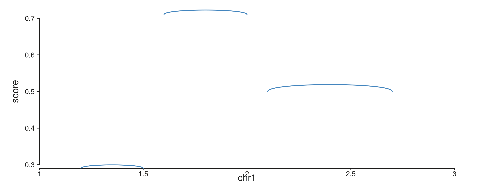
map(height = score) makes each arch’s peak as tall as
its score; the peak heights are interpreted in the track’s
yscale.
Curve and orientation
aes(curve = ...) controls how high the arch bulges:
-
"length"(default) — bulge scales with the genomic span of the link. -
"equal"— fixed bulge of 0.2 data-units regardless of span. - a numeric value — used directly as the bulge offset.
aes(orientation = "+") arches up (default),
"-" arches down.
seq_plot() %|%
seq_track(track_id = "A",
data = arc_gr,
mapping = map(x = start, y = score),
windows = win) %+%
seq_arc(map(x0 = start, x1 = end, height = score),
aesthetics = aes(color = "#AF3029",
linewidth = 1.5,
curve = "equal")) -> p
p$plot()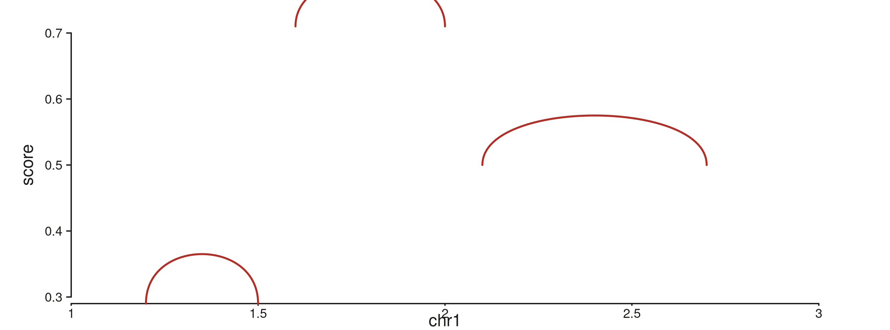
seq_arch — arch with stems and stubs
seq_arch adds vertical stems from each anchor’s baseline
(y0 / y1) up to the arch endpoints. When one
anchor falls outside every visible window, seq_arch instead
draws a half-height stub at the visible end with a
small angled hook and a label naming the partner chromosome.
A BEDPE-style data.frame
sv_df <- data.frame(
chr1 = "chr1",
start1 = c(1.15e6, 1.40e6, 1.85e6, 2.20e6),
chr2 = "chr1",
start2 = c(1.55e6, 2.05e6, 2.45e6, 2.75e6),
height = c(0.8, 0.5, 0.7, 0.6),
stringsAsFactors = FALSE
)
seq_plot() %|%
seq_track(track_id = "A", windows = win) %+%
seq_arch(data = sv_df,
mapping = map(x0 = start1, x1 = start2,
chrom0 = chr1, chrom1 = chr2,
height = height),
aesthetics = aes(color = "#205EA6", linewidth = 1.2)) -> p
p$plot()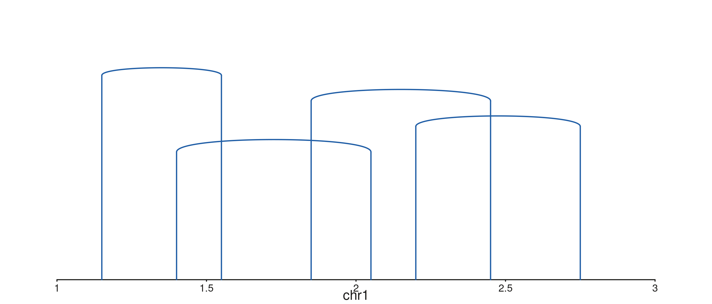
Stubs for half-visible links
When an anchor lies outside the visible window, seq_arch
draws a stub labelled with the partner chromosome. Toggle with
aes(plotStubs = TRUE/FALSE); control hook geometry with
aes(stubAngle = 45, stubLength = 0.02).
# Two in-window pairs and three half-visible (anchor 1 off the right edge,
# or onto chr2).
stub_df <- data.frame(
chr1 = "chr1",
start1 = c(1.15e6, 1.40e6, 1.85e6, 2.20e6, 2.60e6),
chr2 = c("chr1", "chr1", "chr1", "chr2", "chr1"),
start2 = c(1.55e6, 2.05e6, 4.50e6, 5.00e5, 4.20e6),
height = c(0.7, 0.5, 0.8, 0.6, 0.9),
stringsAsFactors = FALSE
)
seq_plot() %|%
seq_track(track_id = "A", windows = win) %+%
seq_arch(data = stub_df,
mapping = map(x0 = start1, x1 = start2,
chrom0 = chr1, chrom1 = chr2,
height = height),
aesthetics = aes(color = "#66800B",
linewidth = 1.1,
stubLength = 0.04)) -> p
p$plot()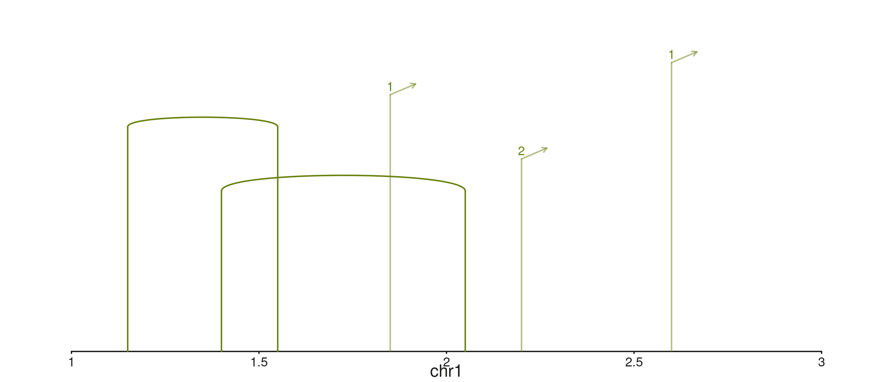
seq_recon — SV reconstruction by strand pair
seq_recon extends seq_arch and colours each
arch by the strand pair on its two anchors:
| strand pair | class | tier | default colour |
|---|---|---|---|
+/+ |
head-to-head inversion | low | flexoki_palette(9)[3] |
-/- |
tail-to-tail inversion | low | flexoki_palette(9)[4] |
-/+ |
tandem duplication | mid | flexoki_palette(9)[1] |
+/- |
deletion | mid | flexoki_palette(9)[2] |
different chroms |
translocation | high | flexoki_palette(9)[9] |
Both strand0 and strand1 must be supplied
via map() — seq_recon errors at
prep() time if either is missing.
A mixed SV table
A handful of synthetic structural variants spanning all five classes:
sv_tbl <- data.frame(
chr1 = "chr1",
start1 = c(1.15e6, 1.30e6, 1.55e6, 1.80e6, 2.10e6,
2.35e6, 2.55e6, 2.75e6),
chr2 = c("chr1","chr1","chr1","chr1","chr1",
"chr1","chr1","chr2"),
start2 = c(1.50e6, 1.85e6, 2.05e6, 2.30e6, 2.60e6,
2.85e6, 4.20e6, 5.00e5),
strand1 = c("+","-","-","+","+",
"-","+","+"),
strand2 = c("+","-","+","-","+",
"-","+","+"),
stringsAsFactors = FALSE
)
sv_tbl
#> chr1 start1 chr2 start2 strand1 strand2
#> 1 chr1 1150000 chr1 1500000 + +
#> 2 chr1 1300000 chr1 1850000 - -
#> 3 chr1 1550000 chr1 2050000 - +
#> 4 chr1 1800000 chr1 2300000 + -
#> 5 chr1 2100000 chr1 2600000 + +
#> 6 chr1 2350000 chr1 2850000 - -
#> 7 chr1 2550000 chr1 4200000 + +
#> 8 chr1 2750000 chr2 500000 + +Plot with the canonical recon mapping:
seq_plot() %|%
seq_track(track_id = "SV", windows = win) %+%
seq_recon(data = sv_tbl,
mapping = map(x0 = start1, x1 = start2,
chrom0 = chr1, chrom1 = chr2,
strand0 = strand1, strand1 = strand2)) -> p
p$plot()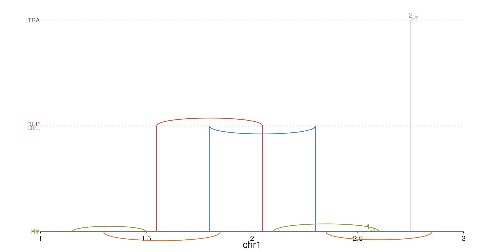
The three horizontal guide lines mark the inversion / Dup-Del / translocation tiers; HH/TT, DEL/DUP, and TRA labels sit on the left margin.
Recoloring classes
Override any default colour via
aes(h2hColor = ..., t2tColor = ..., dupColor = ..., delColor = ..., transColor = ...).
A high-contrast palette:
seq_plot() %|%
seq_track(track_id = "SV", windows = win) %+%
seq_recon(data = sv_tbl,
mapping = map(x0 = start1, x1 = start2,
chrom0 = chr1, chrom1 = chr2,
strand0 = strand1, strand1 = strand2),
aesthetics = aes(h2hColor = "#AF3029",
t2tColor = "#205EA6",
dupColor = "#66800B",
delColor = "#BC5215",
transColor = "#5E409D")) -> p
p$plot()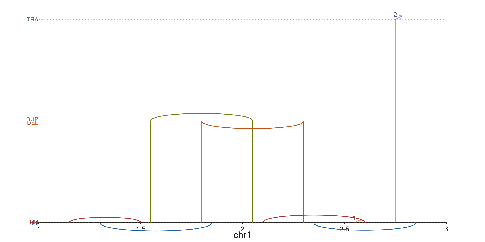
Subsetting the rendered tiers
drawClasses controls which tiers are drawn (and which
guides / labels appear). Drop the translocation row to focus on
intra-chromosome calls:
seq_plot() %|%
seq_track(track_id = "SV", windows = win) %+%
seq_recon(data = sv_tbl,
mapping = map(x0 = start1, x1 = start2,
chrom0 = chr1, chrom1 = chr2,
strand0 = strand1, strand1 = strand2),
drawClasses = c("Inversion", "Dup/Del")) -> p
p$plot()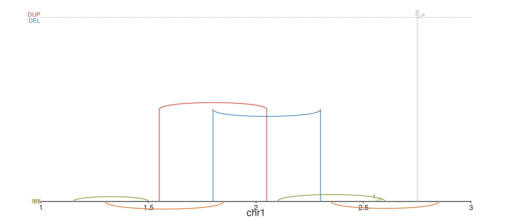
Combining links with other tracks
Links compose with everything else. The example below stacks a
coverage ribbon, a structural-variant seq_recon row, and a
gene model track.
xs <- seq(1.05e6, 2.95e6, length.out = 80)
mu <- sin((xs - 1e6) / 3e5) * 0.3 + 0.5
cov_gr <- GRanges("chr1", IRanges(start = xs, width = 1),
mean = mu, lo = mu - 0.12, hi = mu + 0.12)
gene_gr <- GRanges(
"chr1",
IRanges(start = c(1.10e6, 1.30e6, 1.55e6, 1.78e6,
2.05e6, 2.30e6, 2.55e6, 2.78e6),
width = c(1.5e5, 1.8e5, 1.5e5, 2.0e5,
1.8e5, 1.5e5, 1.8e5, 1.5e5)),
gene_id = c("A","A","A","A","B","B","B","B"),
gene_name = c("GENEA","GENEA","GENEA","GENEA",
"GENEB","GENEB","GENEB","GENEB"),
strand_col = c(rep("+", 4), rep("-", 4)),
feature = rep(c("UTR", "exon", "exon", "UTR"), 2),
color = c(rep("#205EA6", 4), rep("#AF3029", 4))
)
seq_plot() %|%
seq_track(track_id = "Coverage",
data = cov_gr,
mapping = map(x = start, y_min = lo, y_max = hi),
windows = win,
track_height = 1.5) %+%
seq_ribbon(aesthetics = aes(fill = "#4385BE", alpha = 0.5)) %__%
seq_track(track_id = "SV",
windows = win,
track_height = 1.6) %+%
seq_recon(data = sv_tbl,
mapping = map(x0 = start1, x1 = start2,
chrom0 = chr1, chrom1 = chr2,
strand0 = strand1, strand1 = strand2)) %__%
seq_track(track_id = "Genes",
data = gene_gr,
mapping = map(group = gene_id,
type = feature,
strand = strand_col,
label = gene_name,
color = color),
windows = win,
track_height = 1) %+%
seq_gene(map(group = gene_id,
type = feature,
strand = strand_col,
label = gene_name,
color = color)) -> p
p$plot()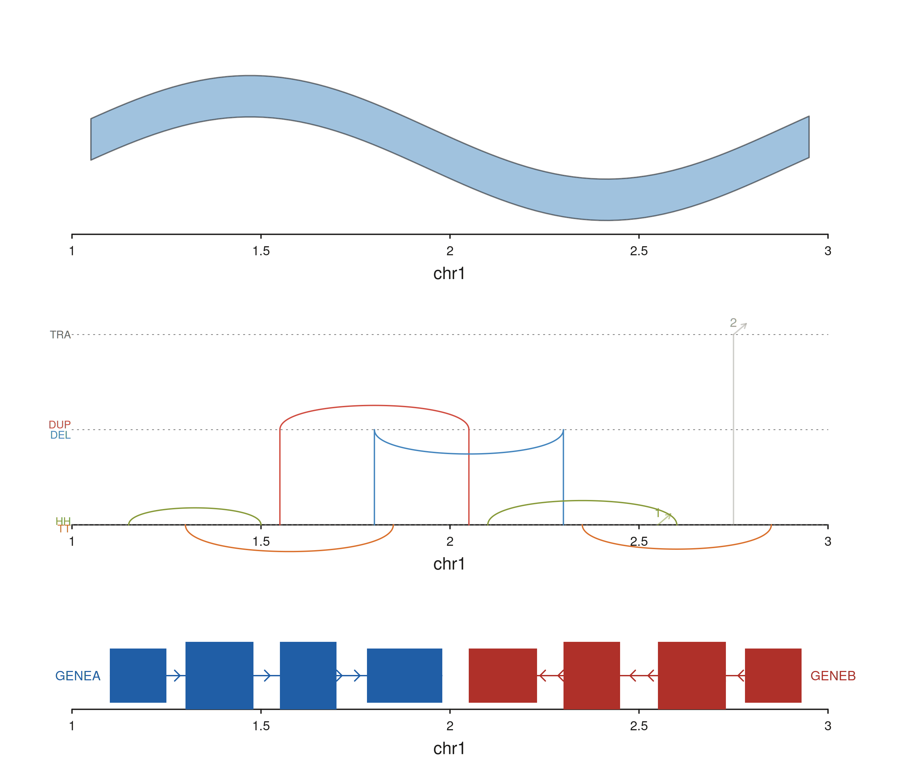
Cross-track connectors
Cross-track links are added at the plot level —
after both referenced tracks have been defined — with t0 /
t1 naming the two tracks explicitly. Anchors are still
encoded in a single data object via the BEDPE-style
map() vocabulary.
A recurring subtlety: when a cross-track link carries its own
data, keep track-level mapping minimal.
Anything in a track’s mapping is merged into the link’s mapping before
evaluation, so expressions like map(x = start, y = logR) on
the track will try to find logR in the link’s BEDPE table
and error out. The idiomatic fix is to attach the per-track
data and mapping to the elements that use
them, not to the track itself.
seq_string — smooth curves between two tracks
seq_string draws a cubic Bezier curve between anchors in
t0 and t1. The strand0 /
strand1 fields drive automatic curve-shape inference:
- matching strands (
+/+,-/-) → C curve - opposing strands (
+/-,-/+) → S curve
Force a specific shape with aes(type = "c") or
aes(type = "s").
SV breakpoints across copy-number and coverage tracks
A simulated copy-number scatter over a coverage ribbon, with three SV
breakpoints connecting loci across the two tracks. Per-link
y0 / y1 values anchor each string to a
specific data-scale y in its track.
xs <- seq(1.05e6, 2.95e6, length.out = 120)
cn_gr <- GRanges("chr1", IRanges(xs, width = 1),
logR = sin((xs - 1e6) / 5e5) + rnorm(length(xs), 0, 0.08))
cov_gr <- GRanges("chr1", IRanges(xs, width = 1),
score = 0.5 + 0.3 * cos((xs - 1e6) / 4e5))
sv_df <- data.frame(
c0 = "chr1", p0 = c(1.30e6, 1.75e6, 2.25e6),
c1 = "chr1", p1 = c(1.60e6, 2.10e6, 2.65e6),
s0 = c("+", "-", "+"),
s1 = c("-", "+", "-"),
y0 = c( 0.8, -0.6, 0.4),
y1 = c( 0.6, 0.7, 0.5),
stringsAsFactors = FALSE
)
seq_plot() %|%
seq_track(track_id = "CN", windows = win, track_height = 1.2) %+%
seq_point(data = cn_gr, mapping = map(x = start, y = logR),
aesthetics = aes(color = "#205EA6", size = 0.35)) %__%
seq_track(track_id = "COV", windows = win, track_height = 1.2) %+%
seq_area(data = cov_gr, mapping = map(x = start, y = score),
aesthetics = aes(fill = "#66800B", alpha = 0.5)) %+%
seq_string(data = sv_df,
map(x0 = p0, x1 = p1, chrom0 = c0, chrom1 = c1,
strand0 = s0, strand1 = s1,
y0 = y0, y1 = y1),
t0 = "CN", t1 = "COV",
aesthetics = aes(color = "#AF3029", linewidth = 1.3,
alpha = 0.75)) -> p
p$plot()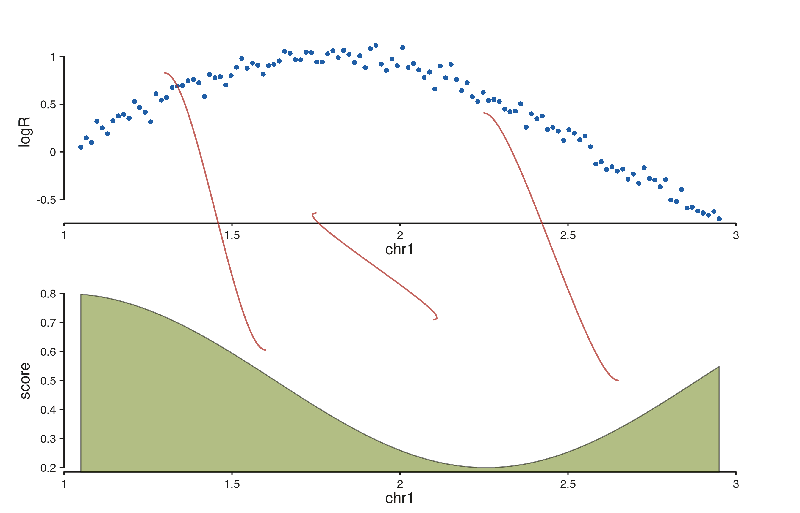
Each string lands at (x0, y0) in the CN track and
(x1, y1) in the COV track. Strands drive the curve shape:
the first and third links (mixed strands) bend as S-curves, the middle
link (matching strands after swap) bends as a C-curve.
Forcing a shape
Drop the strand fields (or set aes(type = "c")) to
render every string as a C-curve regardless of strand:
seq_plot() %|%
seq_track(track_id = "CN", windows = win, track_height = 1.2) %+%
seq_point(data = cn_gr, mapping = map(x = start, y = logR),
aesthetics = aes(color = "#205EA6", size = 0.35)) %__%
seq_track(track_id = "COV", windows = win, track_height = 1.2) %+%
seq_area(data = cov_gr, mapping = map(x = start, y = score),
aesthetics = aes(fill = "#66800B", alpha = 0.5)) %+%
seq_string(data = sv_df,
map(x0 = p0, x1 = p1, chrom0 = c0, chrom1 = c1,
y0 = y0, y1 = y1),
t0 = "CN", t1 = "COV",
aesthetics = aes(color = "#BC5215", linewidth = 1.3,
alpha = 0.75, type = "c")) -> p
p$plot()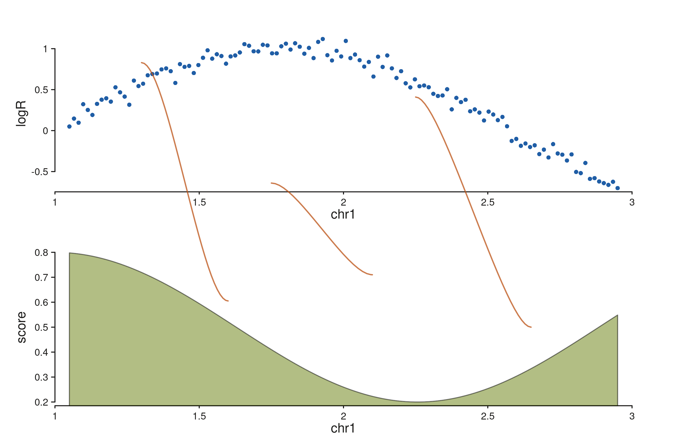
seq_synteny — filled trapezoids between tracks
seq_synteny draws a filled quadrilateral connecting a
region in t0 to a homologous region in
t1. Both edges of each region come from
map():
-
x0,x0_end— left/right genomic edge in trackt0 -
x1,x1_end— left/right genomic edge in trackt1
When y0 / y1 are absent from
map(), the polygon attaches to the bottom edge of
t0’s inner panel and the top edge of t1’s
inner panel — so it fills the gap between the two tracks exactly.
Syntenic blocks between two assemblies
Two gene-model tracks representing homologous segments in two
assemblies, with a trapezoid per block coloured by the mapped
fill column:
genes_top <- GRanges("chr1",
IRanges(start = c(1.20e6, 1.70e6, 2.30e6),
width = c(2.0e5, 1.5e5, 2.5e5)),
gene_id = c("G1", "G2", "G3"),
feature = "exon",
strand_col = c("+", "-", "+"),
color = c("#205EA6", "#AF3029", "#66800B")
)
genes_bot <- GRanges("chr1",
IRanges(start = c(1.25e6, 1.60e6, 2.40e6),
width = c(1.8e5, 2.0e5, 2.2e5)),
gene_id = c("G1p", "G2p", "G3p"),
feature = "exon",
strand_col = c("+", "-", "+"),
color = c("#205EA6", "#AF3029", "#66800B")
)
syn_df <- data.frame(
c0 = "chr1",
p0 = c(1.20e6, 1.70e6, 2.30e6),
p0e = c(1.40e6, 1.85e6, 2.55e6),
c1 = "chr1",
p1 = c(1.25e6, 1.60e6, 2.40e6),
p1e = c(1.43e6, 1.80e6, 2.62e6),
col = c("#205EA6", "#AF3029", "#66800B"),
stringsAsFactors = FALSE
)
seq_plot() %|%
seq_track(track_id = "AsmA", windows = win, track_height = 0.9) %+%
seq_gene(data = genes_top,
mapping = map(group = gene_id, type = feature,
strand = strand_col, color = color)) %__%
seq_track(track_id = "AsmB", windows = win, track_height = 0.9) %+%
seq_gene(data = genes_bot,
mapping = map(group = gene_id, type = feature,
strand = strand_col, color = color)) %+%
seq_synteny(data = syn_df,
map(x0 = p0, x0_end = p0e, x1 = p1, x1_end = p1e,
chrom0 = c0, chrom1 = c1, fill = col),
t0 = "AsmA", t1 = "AsmB",
aesthetics = aes(alpha = 0.35, linewidth = 0.3)) -> p
p$plot()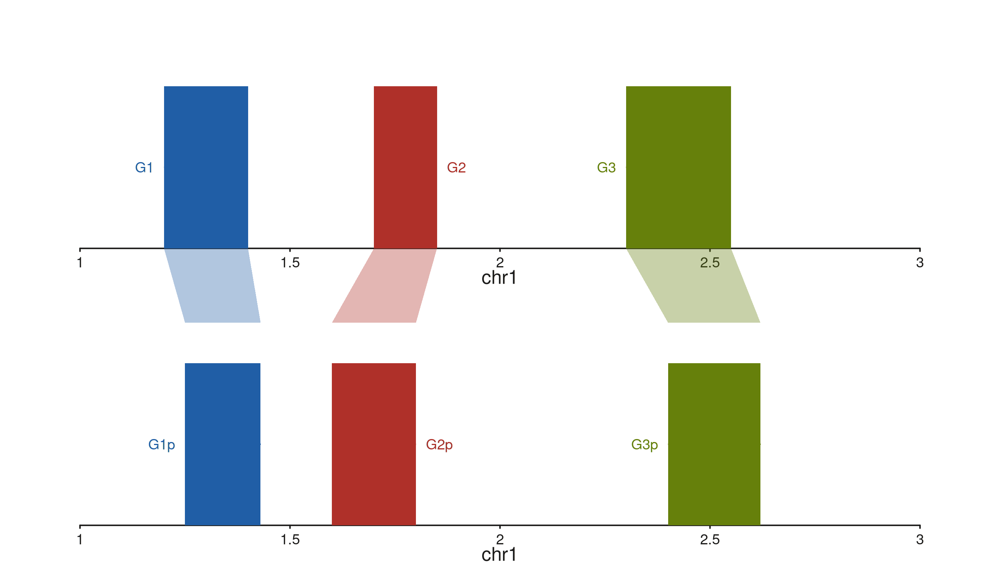
The trapezoids start at AsmA’s bottom inner edge and end
at AsmB’s top inner edge, with left / right corners driven
by the x0 / x0_end and x1 /
x1_end fields. The per-link fill column is
picked up from the mapping; the aes(alpha = ...) applies
globally to the fill.
seq_zoom — overview-to-detail projection
seq_zoom connects the same genomic region as it appears
in two tracks that span different window ranges — a chromosome-scale
overview stacked above a zoomed detail panel, for example. Only
x0 / x0_end are required; x1 /
x1_end default to the same region (the most common case:
“show this region in both tracks”).
The polygon auto-detects which track is above and attaches to its
bottom edge; the lower track gets the top edge. A small stem offset
(aes(stemOffset = 0.01)) nudges the polygon clear of the
track borders.
Chromosome-scale overview into a zoomed detail
# Overview spans 5 Mb; detail zooms into 1.6 – 2.4 Mb.
overview_win <- GRanges("chr1", IRanges(1, 5e6))
detail_win <- GRanges("chr1", IRanges(1.6e6, 2.4e6))
xs_o <- seq(1, 5e6, length.out = 160)
xs_d <- seq(1.6e6, 2.4e6, length.out = 120)
sig_o <- GRanges("chr1", IRanges(xs_o, width = 1),
score = 0.5 + 0.3 * sin((xs_o - 1) / 6e5))
sig_d <- GRanges("chr1", IRanges(xs_d, width = 1),
score = 0.5 + 0.3 * sin((xs_d - 1) / 6e5) +
rnorm(length(xs_d), 0, 0.03))
zoom_region <- GRanges("chr1", IRanges(1.6e6, 2.4e6))
seq_plot() %|%
seq_track(track_id = "Overview", windows = overview_win,
track_height = 0.5) %+%
seq_area(data = sig_o, mapping = map(x = start, y = score),
aesthetics = aes(fill = "#4385BE", alpha = 0.55)) %__%
seq_track(track_id = "Detail", windows = detail_win,
track_height = 1.3) %+%
seq_area(data = sig_d, mapping = map(x = start, y = score),
aesthetics = aes(fill = "#205EA6", alpha = 0.8)) %+%
seq_zoom(data = zoom_region,
map(x0 = start, x0_end = end),
t0 = "Overview", t1 = "Detail",
aesthetics = aes(fill = "#878580", alpha = 0.2,
color = "#878580", linewidth = 0.4)) -> p
p$plot()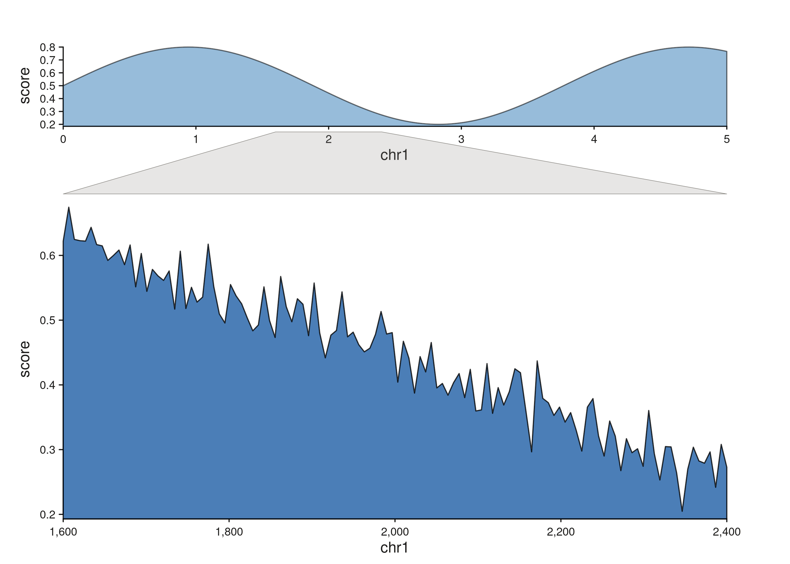
The grey quadrilateral fans from the narrow slice of the overview
track out to the full width of the detail panel. Multiple zoom polygons
are fine — drop more rows into zoom_region to connect more
than one region at once.
Projecting different regions onto the two tracks
Supply separate x1 / x1_end fields when the
region in t1 isn’t identical to the one in t0
— useful when connecting paralogous or translocated segments:
zoom_df <- data.frame(
c0 = "chr1", p0 = 1.60e6, p0e = 2.00e6,
c1 = "chr1", p1 = 1.80e6, p1e = 2.30e6,
stringsAsFactors = FALSE
)
seq_plot() %|%
seq_track(track_id = "Overview", windows = overview_win,
track_height = 0.5) %+%
seq_area(data = sig_o, mapping = map(x = start, y = score),
aesthetics = aes(fill = "#4385BE", alpha = 0.55)) %__%
seq_track(track_id = "Detail", windows = detail_win,
track_height = 1.3) %+%
seq_area(data = sig_d, mapping = map(x = start, y = score),
aesthetics = aes(fill = "#205EA6", alpha = 0.8)) %+%
seq_zoom(data = zoom_df,
map(x0 = p0, x0_end = p0e, x1 = p1, x1_end = p1e,
chrom0 = c0, chrom1 = c1),
t0 = "Overview", t1 = "Detail",
aesthetics = aes(fill = "#AF3029", alpha = 0.18,
color = "#AF3029", linewidth = 0.4)) -> p
p$plot()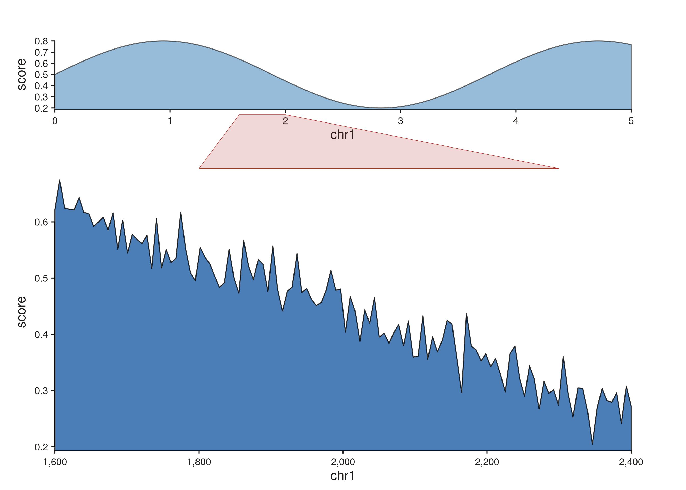
Fanning out to two detail panels with a patchwork layout
Zoom polygons compose naturally with
seq_plot(layout = "..."). Drop a wide overview into the top
row and pair it with two independent detail panels below, then emit one
seq_zoom per detail region. Because plot-level links
validate that t0 and t1 refer to tracks
already added to the plot, the zooms go at the end of the chain.
fan_layout <- "
AAAA
BBCC
"
seq_preview_layout(layout = fan_layout)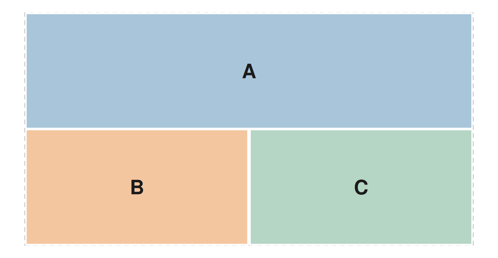
# Overview spans chr1:1-5 Mb; B zooms into 1.2-1.8 Mb, C into 3.2-4.0 Mb.
overview_win <- GRanges("chr1", IRanges(1, 5e6))
detail_b_win <- GRanges("chr1", IRanges(1.2e6, 1.8e6))
detail_c_win <- GRanges("chr1", IRanges(3.2e6, 4.0e6))
xs_a <- seq(1, 5e6, length.out = 200)
xs_b <- seq(1.2e6, 1.8e6, length.out = 80)
xs_c <- seq(3.2e6, 4.0e6, length.out = 80)
mk_sig <- function(xs, jitter = 0) {
GRanges("chr1", IRanges(xs, width = 1),
score = 0.5 + 0.3 * sin((xs - 1) / 5e5) +
rnorm(length(xs), 0, jitter))
}
sig_a <- mk_sig(xs_a, jitter = 0.00)
sig_b <- mk_sig(xs_b, jitter = 0.03)
sig_c <- mk_sig(xs_c, jitter = 0.03)
zoom_b <- GRanges("chr1", IRanges(1.2e6, 1.8e6))
zoom_c <- GRanges("chr1", IRanges(3.2e6, 4.0e6))
seq_plot(layout = fan_layout) %+%
seq_track(track_id = "A", windows = overview_win) %+%
seq_area(data = sig_a, mapping = map(x = start, y = score),
aesthetics = aes(fill = "#4385BE", alpha = 0.55)) %+%
seq_track(track_id = "B", windows = detail_b_win) %+%
seq_area(data = sig_b, mapping = map(x = start, y = score),
aesthetics = aes(fill = "#66800B", alpha = 0.8)) %+%
seq_track(track_id = "C", windows = detail_c_win) %+%
seq_area(data = sig_c, mapping = map(x = start, y = score),
aesthetics = aes(fill = "#AF3029", alpha = 0.8)) %+%
seq_zoom(data = zoom_b, map(x0 = start, x0_end = end),
t0 = "A", t1 = "B",
aesthetics = aes(fill = "#66800B", alpha = 0.22,
color = "#66800B", linewidth = 0.5)) %+%
seq_zoom(data = zoom_c, map(x0 = start, x0_end = end),
t0 = "A", t1 = "C",
aesthetics = aes(fill = "#AF3029", alpha = 0.22,
color = "#AF3029", linewidth = 0.5)) -> p
p$plot()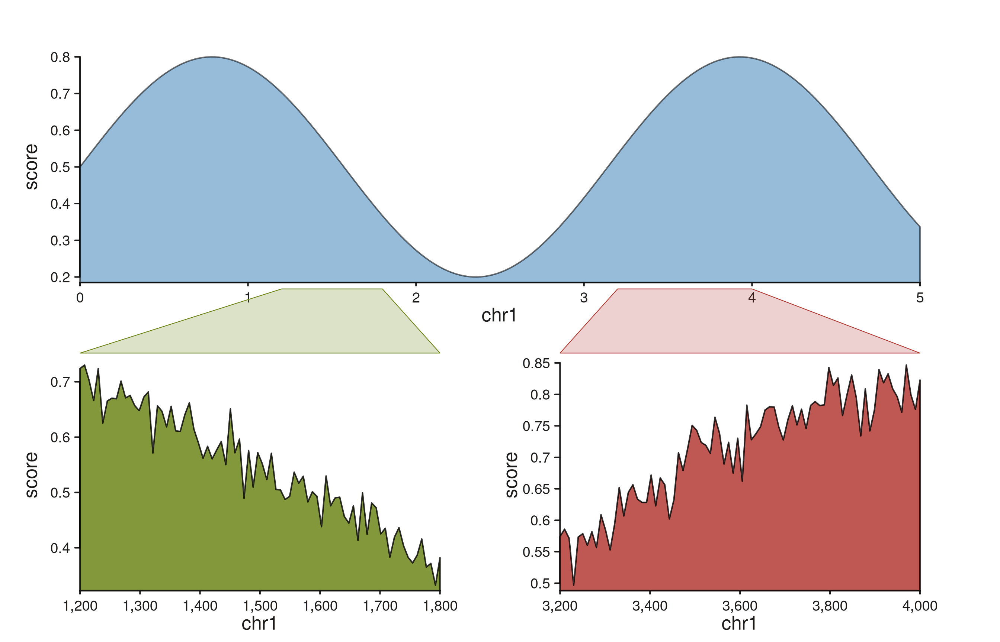
Each zoom polygon inherits the color of its destination track, so the
left and right fan-outs are visually distinguishable at a glance. The
same idiom scales to more panels — add more letters to the layout
string’s second row and a matching seq_zoom per region.
seq_highlight — multi-track region annotation
seq_highlight draws a continuous filled band that passes
through every track from t0 down to t1
(inclusive) at the same genomic coordinates; widths in NPC follow each
track’s own scale, so the band naturally fans or compresses across
tracks with different windows. Unlike seq_zoom (which is a
polygon between a pair of tracks), seq_highlight is a
single shape that crosses many panels, intended for highlighting one or
more loci of interest across a stack — the typical ChIP-seq / ATAC-seq
use case.
Stacked tracks with shared windows
win <- GRanges("chr1", IRanges(1, 1e6))
xs <- seq(1, 1e6, length.out = 400)
mk_sig <- function(seed, freq, jitter = 0.03) {
set.seed(seed)
GRanges("chr1", IRanges(xs, width = 1),
score = 0.5 + 0.3 * sin((xs - 1) / freq) +
rnorm(length(xs), 0, jitter))
}
sig_a <- mk_sig(1, 1.5e5)
sig_b <- mk_sig(2, 2.0e5)
sig_c <- mk_sig(3, 2.5e5)
# Two genomic regions to flag across all three tracks.
hl <- GRanges("chr1", IRanges(c(2.0e5, 6.5e5),
c(2.6e5, 7.4e5)))
seq_plot() %|%
seq_track(track_id = "A", windows = win) %+%
seq_area(data = sig_a, mapping = map(x = start, y = score),
aesthetics = aes(fill = "#4385BE", alpha = 0.7)) %__%
seq_track(track_id = "B", windows = win) %+%
seq_area(data = sig_b, mapping = map(x = start, y = score),
aesthetics = aes(fill = "#205EA6", alpha = 0.7)) %__%
seq_track(track_id = "C", windows = win) %+%
seq_area(data = sig_c, mapping = map(x = start, y = score),
aesthetics = aes(fill = "#24837B", alpha = 0.7)) %+%
seq_highlight(data = hl, map(x0 = start, x0_end = end),
t0 = "A", t1 = "C",
aesthetics = aes(fill = "#AF3029", alpha = 0.18)) -> p
p$plot()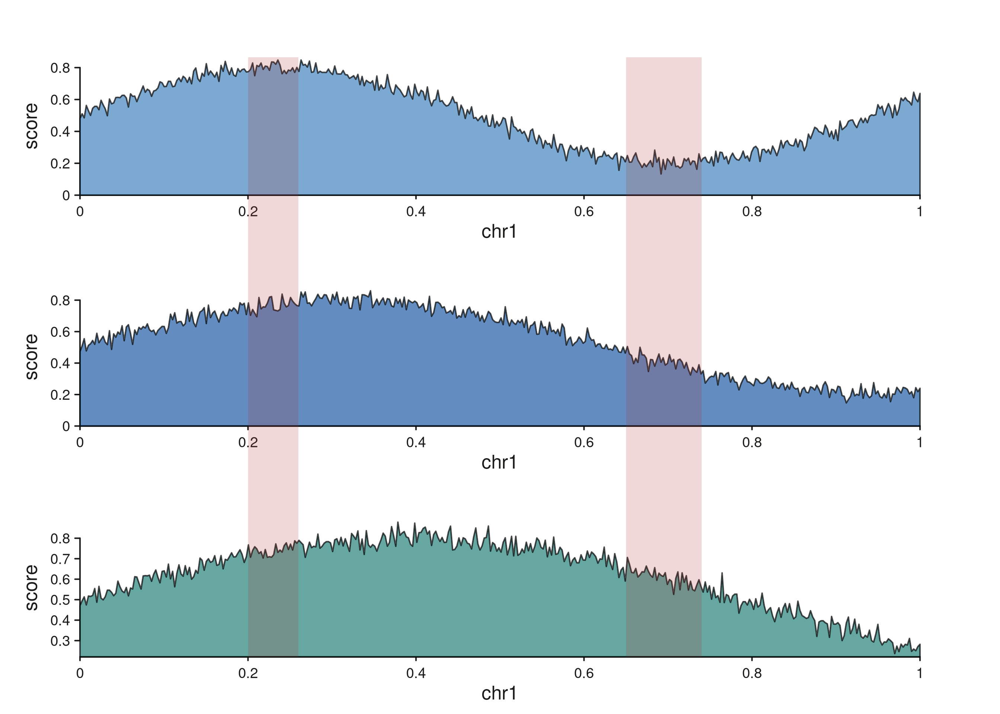
Each highlight region produces a single band that spans all three tracks. Per-track rectangles share their inner panel y-range, and trapezoids in the gaps between tracks bridge each pair.
Different scales: bands fan and compress
When the tracks span different genomic ranges, the highlight follows
each track’s own scale, producing a fanning shape across the scale
change. Pair an overview with a zoomed detail, drop a single
seq_highlight, and the band traces the zoom relationship
visually:
overview_win <- GRanges("chr1", IRanges(1, 5e6))
detail_win <- GRanges("chr1", IRanges(1.6e6, 2.4e6))
xs_o <- seq(1, 5e6, length.out = 200)
xs_d <- seq(1.6e6, 2.4e6, length.out = 120)
sig_o <- GRanges("chr1", IRanges(xs_o, width = 1),
score = 0.5 + 0.3 * sin((xs_o - 1) / 6e5))
sig_d <- GRanges("chr1", IRanges(xs_d, width = 1),
score = 0.5 + 0.3 * sin((xs_d - 1) / 6e5))
# A single 1.8 - 2.2 Mb region of interest.
hl <- GRanges("chr1", IRanges(1.8e6, 2.2e6))
seq_plot() %|%
seq_track(track_id = "Overview", windows = overview_win,
track_height = 0.5) %+%
seq_area(data = sig_o, mapping = map(x = start, y = score),
aesthetics = aes(fill = "#4385BE", alpha = 0.55)) %__%
seq_track(track_id = "Detail", windows = detail_win,
track_height = 1.3) %+%
seq_area(data = sig_d, mapping = map(x = start, y = score),
aesthetics = aes(fill = "#205EA6", alpha = 0.8)) %+%
seq_highlight(data = hl, map(x0 = start, x0_end = end),
t0 = "Overview", t1 = "Detail",
aesthetics = aes(fill = "#878580", alpha = 0.22,
color = "#878580", linewidth = 0.4)) -> p
p$plot()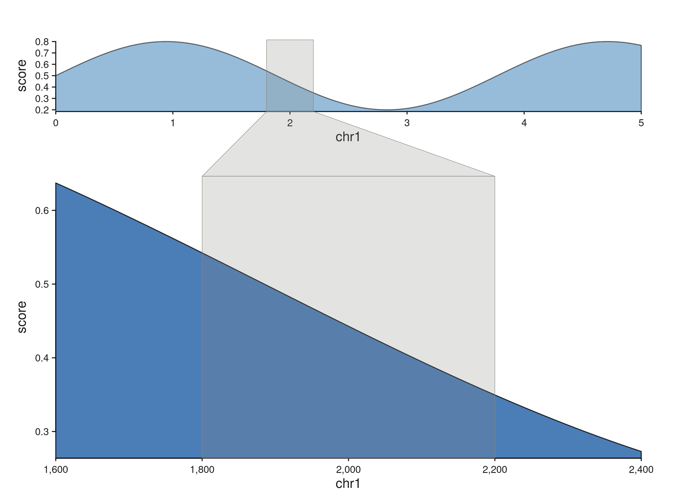
The band is narrow inside the overview (a 5 Mb window) and wide inside the zoomed detail (an 800 kb window covering the same region), with a trapezoid bridging the two.
Flipped tracks: genomic y with scalar x
Elements and links are axis-agnostic — they transform resolved data
coordinates to canvas npc without caring which axis is genomic. A
track’s orientation comes entirely from its map(). Write
map(y = start / end / mid / width) and SeqPlotR auto-flips
the track: y becomes a genomic axis (covering the windows
extent) and x becomes a scalar data axis whose range is inferred from
the element data. No scale_x / scale_y
arguments are required.
gene_meta <- GRanges("chr1",
IRanges(start = seq(1.05e6, 2.95e6, length.out = 14),
width = 1e4),
log2fc = rnorm(14, 0, 1.3),
sig = sample(c("up", "down", "ns"),
14, replace = TRUE,
prob = c(0.35, 0.35, 0.3))
)
up_col <- c(up = "#AF3029", down = "#205EA6", ns = "#878580")
# `y = mid` is a genomic special, so SeqPlotR flips the track: the
# y-axis becomes genomic (1–3 Mb) and the x-axis carries log2fc.
seq_plot() %|%
seq_track(data = gene_meta,
mapping = map(x = log2fc, y = mid, color = sig),
windows = win, track_width = 0.6) %+%
seq_segment(mapping = map(x = 0, x_end = log2fc,
y = mid, y_end = mid,
color = sig),
aesthetics = aes(linewidth = 2.2)) %+%
seq_point(aesthetics = aes(size = 0.6)) -> p
p$plot()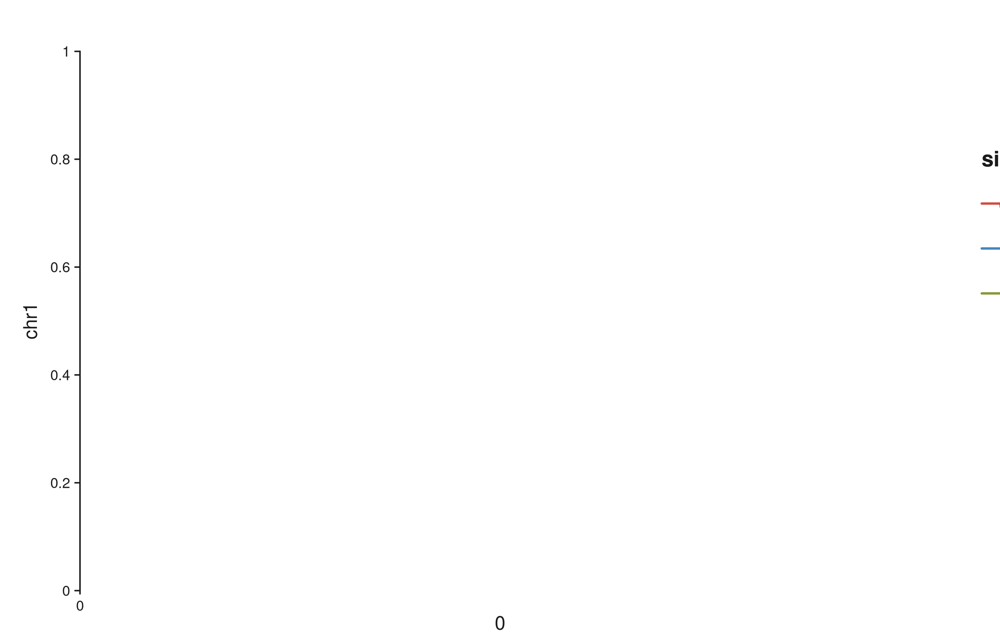
Each gene sits at its true genomic coordinate along the y-axis; the
horizontal segment plus terminal point show a scalar per-gene statistic.
Override the auto-inferred scales with explicit
scale_x = seq_scale_continuous(limits = ...) or
scale_y = seq_scale_genomic(...) on
seq_track() when you need a fixed range; the same operator
chain otherwise works in either orientation.